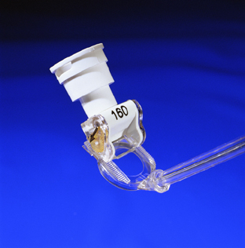
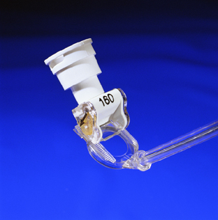

+ Dao rạch giác mạc

Hình: Dao tạo vạt giác mạc trong phẫu thuật khúc xạ

Hình: Vạt giác mạc và chùm tia laser minh họa phẫu thuật khúc xạ
Keratome
* Định nghĩa:
+ Dao rạch giác mạc

Hình: Dao tạo vạt giác mạc trong phẫu thuật khúc xạ
Hình: Vạt giác mạc và chùm tia laser minh họa phẫu thuật khúc xạ